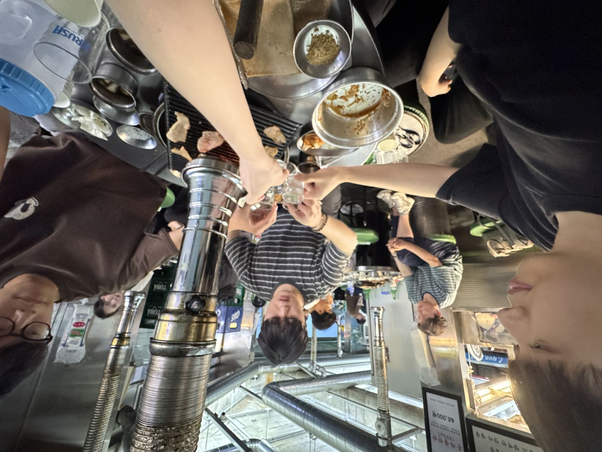

Weekly Drinking Promotion
Association (WDPA)
입력 : 2026년 7월 29일

매주술권장협회 핵심 운영진 회합 현장 / 사진=WDPA
매주술권장협회 핵심 운영진이 지난 29일 경기 용인시 수지구 일대에서 긴급 회동을 갖고 친목 도모와 하반기 정서 안정 프로그램을 성공적으로 마무리한 것으로 확인됐다.
이번 회합은 정철현 감사의 갑작스러운 제안으로 성사됐다.
협회 관계자에 따르면 이날 정 감사는 업무가 평소보다 일찍 종료되자 한창희 협회장, 송병완 상무이사, 허근영 전무이사, 최민규 상근부회장 등 핵심 운영진에게 직접 개인 전화를 돌리며 "오늘 한잔하자"는 긴급 소집령을 발동한 것으로 알려졌다.
이에 참석자들은 각자의 개인 일정을 마무리한 뒤 하나둘씩 현장에 합류했다.
다만 허근영 전무이사는 협회 영부인으로 불리는 여자친구와의 공식 만찬 일정을 소화한 뒤 뒤늦게 합류한 것으로 확인됐다.
반면 김성민 해외지부 운영총괄은 일본 현지 관계자들과의 국제 협력 및 업무협약(MOU) 체결 일정으로 인해 이번 회합에 참석하지 못한 것으로 확인됐다.
협회 관계자는 "김 총괄은 해외지부 운영과 국제 네트워크 확대를 위한 공식 일정을 소화 중인 것으로 알고 있다"고 전했다.
회합은 수지구 소재 '모소리'에서 진행됐다.
이날 가장 큰 관심을 받은 것은 최근 협회 내부에 새롭게 자리 잡은 '정철현 감사표 소맥 의전 문화'였다.
목격자들에 따르면 무더운 날씨와 갈증이 감도는 순간이면 정 감사가 직접 맥주와 소주의 황금비율을 맞춰 소맥을 제조하는 문화가 자연스럽게 형성됐으며, 이날 역시 첫 잔은 정 감사의 손에서 시작됐다.
한 참석자는 "거품이 일반 소맥과는 차원이 달랐다"며 "크리미하면서도 목 넘김이 굉장히 부드러워 사실상 액체 디저트 수준이었다"고 평가했다.
또 다른 관계자는 "비율을 눈대중으로 맞추는데도 실패하는 경우를 본 적이 없다"며 "국가 차원의 소맥 표준 레시피로 지정해야 하는 것 아니냐는 이야기도 나왔다"고 전했다.
운영진은 해당 소맥으로 건배를 진행한 뒤 두 잔 정도를 마신 후 본격적인 소주 체제로 전환하며 회합을 이어갔다.
이날 회합에서는 송병완 상무이사의 개인 투자 고민도 자연스럽게 화제가 됐다.
송 상무이사는 최근 SK하이닉스 주가 하락으로 인한 심리적 고통을 토로하며 참석자들에게 속내를 털어놓은 것으로 알려졌다.
그러면서도 그는 "그래도 너희와 함께 술 한잔하니 너무 좋다"고 말했고, 참석자들은 서로를 격려하며 훈훈한 분위기를 이어간 것으로 전해졌다.
1차 일정을 마친 운영진은 인근 '투다리'로 이동해 2차 회합을 진행했다.
이 자리에서는 건어물 애호가로 알려진 정철현 감사가 지체 없이 먹태를 주문했고, 뜨거운 국물 요리에 남다른 애정을 보여온 최민규 상근부회장은 김치우동을 선택하며 각자의 확고한 식문화 철학을 다시 한번 입증했다.
현장 관계자는 "메뉴를 고민하는 시간이 거의 없었다"며 "먹태와 김치우동은 이미 협회 운영진 사이에서 정해진 공식 조합처럼 보였다"고 말했다.
참석자들은 늦은 시간까지 다양한 이야기를 나누며 친목을 다진 뒤 별다른 사고 없이 모든 일정을 마무리한 것으로 확인됐다.
한편 협회 내부에서는 정철현 감사의 소맥 제조 능력이 회를 거듭할수록 발전하고 있는 점을 주목하고 있으며, 일각에서는 해당 기술이 개인의 경험에서 비롯된 것인지, 아니면 장기간의 연구개발 성과인지를 확인하기 위한 사실관계 검토가 필요하다는 의견도 제기되고 있다.